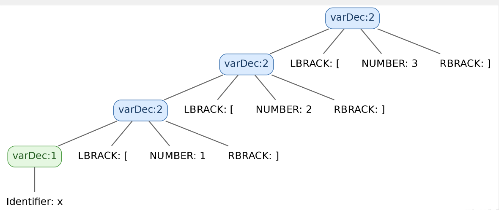

Week 8 - Semantic Part 2 - Type Checking
Semantic Analysis: Resolving Array Types¶
We now have all the background we need to implement semantic actions. In this lab, we will work through a few basic semantic analysis tasks and see how to use the symbol table in practice. These examples will give you a starting point; you will implement the remaining checks yourself.
We use the Listener approach for semantic analysis here. You can also perform the same tasks with a Visitor, such as your existing Lab6Visitor, and we encourage you to try both approaches.
All rule and token names in this document follow the current
Splc.g4grammar.
The source code for this lab is available at:
If you have already downloaded the Lab 6 repository, update it with:
First, let us look at the relevant grammar rules, which now support arrays:
globalDef
: specifier Identifier LPAREN funcArgs RPAREN LBRACE statement* RBRACE // Function definition
| specifier varDec SEMI // Global variable or array
;
varDec
: Identifier
| varDec LBRACK NUMBER RBRACK
;
specifier
: INT | CHAR | VOID
;
statement
: LBRACE statement* RBRACE # CombineStmt // Compound statement (new scope)
| specifier varDec (ASSIGN expression)? SEMI # LocalVariableStmt // Local variable or array
| RETURN expression SEMI # ReturnStmt
| expression SEMI # ExpressionStmt
;
Note that each SPLC variable declaration declares exactly one variable.
We will start with the basics of defining and looking up variables.
Since we are using a Listener for semantic checks, first create a class named SyntaxListener that extends SplcBaseListener. Add these two fields:
globalScopeis the root scope.currentScopetracks the current scope and changes as we traverse the parse tree.
1. Entering and Leaving Scopes¶
A compound statement labeled # CombineStmt introduces a new scope delimited by a pair of braces. For example:
The corresponding grammar rule is:
Using a Listener: Because this alternative has a label, ANTLR generates enterCombineStmt and exitCombineStmt callbacks. Create a new scope on entry and restore the enclosing scope on exit:
@Override
public void enterCombineStmt(SplcParser.CombineStmtContext ctx) {
this.currentScope = new Scope(this.currentScope);
}
@Override
public void exitCombineStmt(SplcParser.CombineStmtContext ctx) {
this.currentScope = this.currentScope.getParent();
}
Using a Visitor: When you override visitCombineStmt, you need to explicitly visit the statements inside the block. Create the block scope before visiting them, then restore the enclosing scope afterward:
@Override
public Void visitCombineStmt(SplcParser.CombineStmtContext ctx) {
this.currentScope = new Scope(currentScope);
for (int i = 0; i < ctx.statement().size(); i++) {
visit(ctx.statement(i));
}
this.currentScope = this.currentScope.getParent();
return null;
}
2. Resolving the Base Type¶
SPLC does not use a single TYPE token. Instead, the specifier rule has three keyword alternatives:
Only the token accessor for the matched alternative returns a node; the others return null. We can therefore use a helper method to map the keyword to a PrimitiveType.
For an array, the primitive element type is still either INT or CHAR. Section 4 explains how to combine that base type with the array dimensions to construct the complete type.
private Type resolveType(SplcParser.SpecifierContext ctx) {
if (ctx.INT() != null) {
return PrimitiveType.INT;
} else if (ctx.CHAR() != null) {
return PrimitiveType.CHAR;
} else {
return PrimitiveType.VOID;
}
}
3. Extracting the Variable Name¶
The grammar for a variable declarator is:
The first alternative declares a plain variable; the second adds an array dimension to another declarator. For x[1][2][3], the outermost node matches varDec [3], its child matches varDec [2], and the next level matches varDec [1]. The innermost varDec contains only the Identifier.

To obtain the variable name, follow the nested varDec nodes down to the base case. If the current node has an Identifier, we have reached it. Otherwise, recurse into varDec():
private String getVarName(SplcParser.VarDecContext ctx) {
if (ctx.Identifier() != null) {
return ctx.Identifier().getText();
} else {
// varDec LBRACK NUMBER RBRACK
return getVarName(ctx.varDec());
}
}
In other words, keep descending until you find the Identifier, then return its text.
4. Constructing the Complete Type with Nested Arrays¶
First, ArrayType needs two fields:
Resolving specifier alone is not enough to determine a variable's complete type: the declarator may make it an array. We also need to process varDec and build the appropriate array type.
// varDec: int a[1][2][3] -> type: int[3][2][1]
private Type getVarType(Type baseType, SplcParser.VarDecContext ctx) {
// A plain identifier has the base type.
if (ctx.Identifier() != null) {
return baseType;
}
// 1. Collect dimensions from the parse-tree root toward the identifier.
List<Integer> dims = new ArrayList<>();
SplcParser.VarDecContext p = ctx;
// For this example, dims will contain [3, 2, 1].
while (p.Identifier() == null) {
dims.add(Integer.parseInt(p.NUMBER().getText()));
p = p.varDec();
}
// 2. Wrap the type in an array for each dimension.
// Initially: t = int
// After iteration 1: t = array(int, 3)
// After iteration 2: t = array(array(int, 3), 2)
// After iteration 3: t = array(array(array(int, 3), 2), 1)
// The final toString representation is int[3][2][1].
Type t = baseType;
for (int d : dims) {
t = new ArrayType(t, d);
}
return t;
}
The method first checks whether the declarator is a plain identifier. If so, it returns the base type directly. Otherwise, it collects the array dimensions.
Dimensions are collected from the outermost parse-tree node inward. For int x[1][2][3], this produces [3, 2, 1]: the reverse of their written order. The actual type is array(array(array(int, 3), 2), 1), with the following structure:
- Outermost array: length 1, with elements of type
int[3][2]. - Middle array: length 2, with elements of type
int[3]. - Innermost array: length 3, with elements of type
int.
Here, types such as int[3][2] use the lab's toString format, which lists inner dimensions before outer dimensions.
We then build the complete array type by wrapping the previous type in another array, one dimension at a time:
- Start with the innermost array. Its element type is the supplied
baseType, and its length is the first value indims, which comes from the outermost parse-tree node. In this example, that value is 3. Construct the array type and store it int. - Build the next enclosing array. Its element type is the array constructed in the previous step, and its length is the next value in
dims, which is 2 in this example.
The same process works for any number of dimensions. Each new array contains elements of the type built in the previous iteration, and its length comes from the next entry in dims. This builds the type using the dimensions from right to left in the declaration.
Keep the two traversal directions in mind:
- Starting at the
Identifierand following parent links upward encounters dimensions 1, 2, and 3, in their written order. - Starting at the root and descending toward the identifier, as
getVarTypedoes, encounters dimensions 3, 2, and 1, in reverse written order.
5. Registering Variables and Detecting Redefinitions¶
We now have helpers for obtaining a variable's name and type. The next step is to process each declaration and add the variable to the symbol table.
Since each declaration in this grammar contains exactly one declarator, apply this process once for each declaration encountered.
5.1 Global Variables¶
Global variable and array declarations appear in globalDef without braces. Function definitions, by contrast, contain LBRACE and RBRACE.
@Override
public void enterGlobalDef(SplcParser.GlobalDefContext ctx) {
if (ctx.LBRACE() != null && ctx.RBRACE() != null) {
visitFuncDef(ctx);
} else {
visitVariableDec(ctx);
}
}
// Variable declaration
private void visitVariableDec(SplcParser.GlobalDefContext ctx) {
Type baseType = resolveType(ctx.specifier());
SplcParser.VarDecContext varDec = ctx.varDec();
TerminalNode identifierNode = getVarIdentifier(varDec);
String name = identifierNode.getText();
Type type = getVarType(baseType, varDec);
if (this.globalScope.lookupCurrentVariable(name) != null) {
errors.add(SplcSemanticError.redefinition(identifierNode));
} else {
this.globalScope.defineVariable(name, type);
}
}
private void visitFuncDef(SplcParser.GlobalDefContext ctx) {
Type returnType = resolveType(ctx.specifier());
String name = ctx.Identifier().getText();
if (globalScope.lookupFunction(name) == null) {
globalScope.defineFunction(name, returnType, new ArrayList<>());
currentScope = globalScope.lookupFunction(name); // Update the current scope.
} else {
errors.add(SplcSemanticError.redeclaration(ctx.Identifier()));
return;
}
// TODO: Check function parameters.
}
5.2 Local Variables¶
The relevant rules in the .g4 file are:
globalDef
: specifier Identifier LPAREN funcArgs RPAREN LBRACE statement* RBRACE // Function definition
| specifier varDec SEMI // Global variable declaration
;
statement
: LBRACE statement* RBRACE # CombineStmt
| specifier varDec (ASSIGN expression)? SEMI # LocalVariableStmt
| RETURN expression SEMI # ReturnStmt
| expression SEMI # ExpressionStmt
;
Local variable declarations use the alternative labeled # LocalVariableStmt. Each statement contains just one declarator:
@Override
public void enterLocalVariableStmt(SplcParser.LocalVariableStmtContext ctx) {
Type baseType = resolveType(ctx.specifier());
SplcParser.VarDecContext varDec = ctx.varDec();
TerminalNode varIdentifier = getVarIdentifier(varDec);
String name = varIdentifier.getText();
Type type = getVarType(baseType, varDec);
// defineVariable(name, type) returns null if the name is already declared in this scope.
VariableSymbol result = this.currentScope.defineVariable(name, type);
if (result == null) {
errors.add(SplcSemanticError.redeclaration(varIdentifier));
return;
}
// TODO: Check that the initializer is compatible with the declared type.
// int a = 'c'; // OK
// int a[1][2] = 1; // Error
}
Visiting local declarations: Listener vs. Visitor
With a Listener, the parse-tree walker automatically invokes callbacks such as enterLocalVariableStmt. With a Visitor, your traversal code must visit the relevant statement nodes. Before the end of your function-definition handler:
add the following loop:
Recap
The examples above show how to:
- Enter and leave scopes for
CombineStmtblocks, with function bodies handled separately inglobalDef. - Map the
INT,CHAR, andVOIDkeywords to primitive types usingresolveType. - Recursively extract an array variable's name using
getVarName. - Construct nested
ArrayTypeobjects from the parse-tree dimensions usinggetVarType. - Register variables with
Scope.defineVariableand report a duplicate declaration when it returnsnull.
You have now seen how to define variables and check for duplicate definitions using a symbol table and a Listener. Use this approach to implement the remaining semantic checks yourself.
Exercises¶
Building on the symbol table from the previous lab and the examples in this lab, implement the following semantic analysis features:
- Resolve array types: Process multidimensional array declarations in
varDec, construct the correctArrayType, and print it in the required format. - Handle compound statements (
# CombineStmt): Each{ ... }block introduces a new scope and supports variable shadowing. - Check type compatibility: Arrays cannot be assigned to as a whole. In particular, a scalar value cannot be assigned directly to an array variable without subscripts.
Use the error categories and output format from the previous lab's exercises.
Part A¶
Since this lab's walkthrough uses a Listener, implement SyntaxListener.java first.
Part B¶
Using your SyntaxListener.java implementation as a reference, implement SyntaxVisitor.java.
Test Cases¶
Test 1: Valid Array Declarations
Output:
Test 2: Duplicate Variable Names
Output:
Test 3: Valid Nested Blocks
Output:
Test 4: Type Mismatches in Array Assignments
int x;
int main(){
int a = 5;
int b = 6;
int c[3][2][1];
char d[1][2];
{
int x = 7;
a = 5;
{
b = 2;
x = 8;
}
x = 'c';
c = 1;
d = 'h';
int z = 'd';
char k = 1;
}
x = 10;
}
Output: